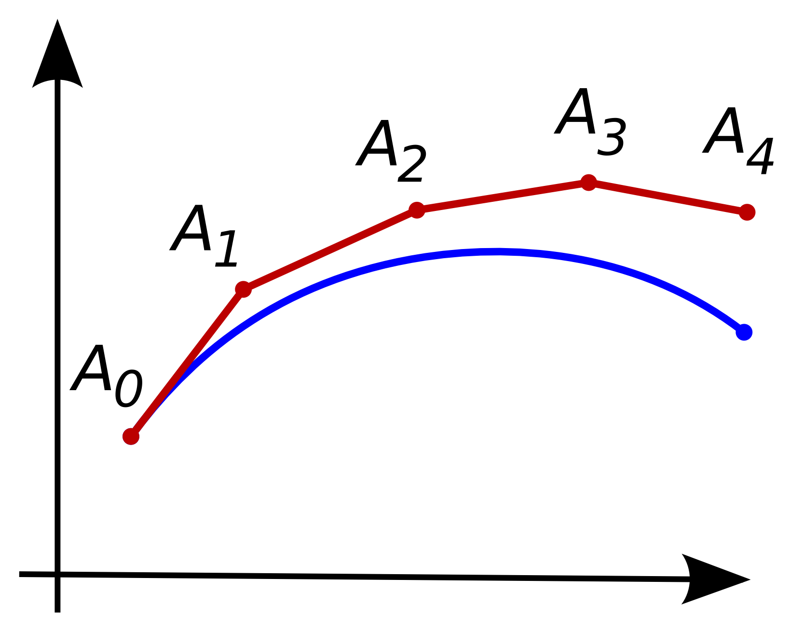

因为想学习Neural ODE视角下的diffusion方法，所以先从入门Neural ODE开始。本篇文章从ODE的定义开始，通过Euler数值法求解ODE与ResNet架构之间的关系引出Neural ODE，并推导其训练所需的reverse-time算法。
一、Ordinary Differential Equation (ODE)
常微分方程（ordinary differential equation, ODE）是未知函数只含有一个自变量的微分方程，例如简单的一阶常微分方程有以下形式： \[ y'(t) = f(t, y), y(t_0) = y_0 \] 其中\(y(t)\)表示\(y\)是以\(t\)为自变量的函数，\(y'(t)\)是其导数，通常会需要给出某点的初值\(y_0\)，才能解出\(y(t)\)。当\(f(x, y)\)取某些特定形式的时候，我们可以得到\(y(t)\)的解析解，例如\(f(t, y) = y(t)\)，我们知道\(y(t) = Ae^{t}\)是满足条件的，其中\(A\)为待定系数，通过代入给定的初值即可得到。但是大多数时候，\(f(t, y)\)比较复杂， 无法求得解析解。幸运的是，很多场景中我们的目标只是能够在给定\(t\)时获得\(y(t)\)的取值即可，因此只需要数值解。在给定初值时，任意一点\(t\)处的\(y(t)\)取值可以由积分得到： \[ y(t) = y(t_0) + \int_{t_0}^t y'(t)dt = y_0 + \int_{t_0}^t f(t,y)dt \]
二、Euler法与ResNet
ODE的数值解法是已经被广泛探索的领域，本质就是各种求\(\int_{t_0}^t f(t, y)dt\)的数值方法，但之所以想到用ODE来进行数据建模，还是因为最基本的Euler法。Euler法把积分区间\([t_0, t]\)平均分成若干片段，把积分过程变为在切线方向上逐步前进的过程（类似将区间分割为若干足够小的分区间求和的数值积分方法）。

令片段长度为\(\delta\)，则\(t_{n+1} = t_n + \delta\)，由一阶近似方法可以得到： \[ y(t_{n+1}) = y(t_n) + (t_{n+1} - t_n) y'(t_n) = y(t_n) + \delta f(t, y(t_n)) \] 显然，\(h\)越小，即分割的片段越多，则得到的结果越精确。而如果我们仔细看递推表达式，会发现与ResNet的定义形式非常相似： \[ \begin{split} \text{Euler Method}:&~y(t_{n+1}) = y(t_n) + \delta f(t, y(t_n)) \\ \text{ResNet}:&~h_{t+1} = h_t + f(\theta_t, h_t) \end{split} \] 其中\(h_t\)为第\(t\)层的隐状态，\(f\)是前向网络，\(\theta_t\)为第\(t\)层的网络权重。如此相似的形式告诉我们ResNet一定程度上可以看作是在用Euler法求解ODE初值问题，其中积分域\(t\)是离散的，在ResNet中代表网络的深度。但有一点不同的是，ResNet每层的权重不一样，对应的ODE中的\(f\)每层都不同，因此只能说是形式上的相近。
三、Neural ODE
1. 定义
那很自然的，我们会想到用ODE来做更高层次的抽象，用神经网络来表达\(f(t, y(t_n))\)，或者说\(f(t, h(t_n), \theta)\)，则整个过程可以表示为： \[ y = \text{ODESolver}(h(t_0), f, t_0, t_1, \theta), h(t_0) = \text{embed}(x) \] 其中\(h(t_0)\)为初值条件，是根据输入\(x\)变换得到的（e.g. embedding过程），\(t_0\)与\(t_1\)是积分上下限的超参（但是也可以做成可训练的），\(\theta\)指模型\(f\)的参数。而\(\text{ODESolver}\)则可以使用各种各样的求解器，前文所述的Euler法就是最基础的一种。使用ODE的视角做建模有两个非常显著的优势：
- Memory efficient：ODE视角只需要用一个网络来建模导数，因此只需要一组参数，而ResNet这样的则是每层都有独立的参数。另外，在训练中，ODE的reverse算法与前向算法一致，都只需求解一次ODE，因此也不需要存储中间状态（下文再展开），可以大幅减少训练的内存需求。
- Adaptive computation：很多先进的\(\text{ODESolver}\)都能对递推步数（一定程度上可以理解为模型深度）根据\(f\)的各种性质进行动态调整，因此模型的计算复杂度能够自适应地根据问题的复杂度调整。
2. 训练
如果仍然使用backpropagation算法计算梯度来进行训练的话，内存占用会非常大，因为需要记录每一步的中间输出，而且传导过程可能与具体采用的\(\text{ODESolver}\)算法有关。而伴随灵敏度方法（adjoint sensitivity method）可以很优雅地解决这个问题，它将梯度计算的流程划归到与前向计算一致，都只需求解一次ODE，因此不仅内存占用小（不用存中间态），同时也与\(\text{ODESolver}\)的算法选择解藕。
Adjoint sensitivity method
整个过程的大致想法是通过伴随状态（adjoint state）将计算梯度的过程也变为求解ODE的过程，再将伴随状态的初值与原问题的初值一起输入到\(\text{ODESolver}\)中，即可在前向求解过程中将梯度与结果一同输出。
对初值的梯度
令最终的loss为\(\mathcal{L}\)，我们先考虑如何求解\(\frac{\partial \mathcal{L}}{\partial h(t_0)}\)（该梯度会用于对输入变换\(g\)的训练）。首先定义伴随状态（adjoint state）： \[ a(t) = \frac{\partial \mathcal{L}}{\partial h(t)} \] 接下来我们需要得到关于\(a(t)\)的ODE。当\(t\)产生\(\delta\)的变化时，我们有： \[ a(t) = \frac{\partial \mathcal{L}}{\partial h(t+\delta)}\frac{\partial h(t+\delta)}{\partial h(t)} = a(t+\delta)\frac{\partial h(t+\delta)}{\partial h(t)} \] 根据\(h(t+\delta) = h(t) + \int_{t}^{t+\delta} f(s, h(s), \theta)ds\)，我们可以进一步得到： \[ \begin{split} a(t) &= a(t + \delta) \frac{\partial}{\partial h(t)}(h(t) + \int_{t}^{t+\delta} f(s, h(s), \theta)ds) \\ &= a(t+\delta)[1 + \frac{\partial }{\partial h(t)}(\int_{t}^{t+\delta} f(s, h(s), \theta)ds)] \end{split} \] 因此： \[ \begin{split} a'(t) &= \lim_{\delta \rightarrow0^+} \frac{a(t+\delta) - a(t)}{\delta} \\ &= \lim_{\delta\rightarrow 0^+} \frac{-a(t+\delta)\frac{\partial }{\partial h(t)}(\int_{t}^{t+\delta} f(s, h(s), \theta)ds)}{\delta} \\ &= -a(t) \frac{\partial f(t, h(t), \theta)}{\partial h(t)} \end{split} \] 由于\(a(t_1)\)即为\(\mathcal{L}\)关于网络最终输出\(h(t_1)\)的梯度，是很容易求的，因此可以作为ODE问题的初值，从而得到： \[ a'(t) =-a(t) \frac{\partial f(t, h(t), \theta)}{\partial h(t)}, a(t_1) = \frac{\partial \mathcal{L}}{\partial h(t_1)} \] 则对于\(h(t_0)\)的梯度为： \[ a(t_0) = \frac{\partial \mathcal{L}}{\partial h(t_0)} = a(t_1) + \int_{t_1}^{t_0}-a(t) \frac{\partial f(t, h(t), \theta)}{\partial h(t)}dt \] 对\(\theta\)以及\(t\)的梯度
类似的，我们定义对于权重\(\theta\)以及\(t\)的伴随状态： \[ a_\theta(t) = \frac{\partial \mathcal{L}}{\partial \theta(t)}， a_t(t) = \frac{\partial \mathcal{L}}{\partial t} \] 我们认为权重不随时间而变化，因此有： \[ \frac{d\theta(t)}{dt} = 0, \frac{dt}{dt} = 1 \] 接下来的想法非常巧妙，我们之前已经分析了如何通过\(a(t)\)求解\(\frac{\partial \mathcal{L}}{\partial h(t)}\)，而\(f(t, h(t), \theta)\)输出的是\(h'(t)\)，那如果我们对\(f\)的输出进行扩增，使其同时也能输出\(\theta'(t)\)和\((t)'\)，就可以直接把求解\(\frac{\partial \mathcal{L}}{\partial h(t)}\)的过程中一元微积分的内容替换成多元微积分，从而得到结果。即： \[ [\frac{dh(t)}{dt}, \frac{d\theta(t)}{dt}, \frac{dt}{dt}] = f_{aug}(t, h(t), \theta) = [f(t, h(t), \theta), 0, 1] \] 类似的，对伴随状态进行扩增： \[ a_{aug}(t) = [a(t), a_\theta(t), a_t(t)] \] 扩增后的向量可以看成只是对之前的向量增加了若干维度，因此仍然可以用之前推导的结果： \[ \begin{split} a'_{aug}(t) &= - a_{aug}(t) \frac{\partial f_{aug}}{\partial [h(t), \theta(t), t]} \\ &= - [a(t), a_\theta(t), a_t(t)] \left[\begin{array}{ccc} \frac{\partial f}{\partial h(t)} & \frac{\partial f}{\partial \theta(t)} & \frac{\partial f}{\partial t} \\ \frac{\partial 0}{\partial h(t)} & \frac{\partial 0}{\partial \theta(t)} & \frac{\partial 0}{\partial t}{} \\ \frac{\partial 1}{\partial h(t)} & \frac{\partial 1}{\partial \theta(t)} & \frac{\partial 1}{\partial t} \end{array}\right]\\ &= - [a(t), a_\theta(t), a_t(t)] \left[\begin{array}{ccc} \frac{\partial f}{\partial h(t)} & \frac{\partial f}{\partial \theta(t)} & \frac{\partial f}{\partial t} \\ 0&0&0 \\ 0&0&0 \end{array}\right]\\ &= - [a(t)\frac{\partial f}{\partial h(t)}, a(t)\frac{\partial f}{\partial \theta(t)}, a(t)\frac{\partial f}{\partial t}] \end{split} \] 而初值是： \[ a_{aug}(t_1) = [a(t_1), a_\theta(t_1), a_t(t_1)] = [\frac{\partial \mathcal{L}}{\partial h(t_1)}, \frac{\partial \mathcal{L}}{\partial \theta(t_1)}, \frac{\partial \mathcal{L}}{\partial t_1}] = [\frac{\partial \mathcal{L}}{\partial h(t_1)}, 0, a(t_1)f(t_1, h(t_1), \theta)] \] 其中\(\theta\)项的初值为0是因为\(\theta(t_1)\)并未参与计算（\(\theta(t_{0})\)用于计算\(h(t_0 + \delta)\)）。这里\(t\)的初值在论文中是带负号的，但感觉似乎不应该带负号，目前还没搞明白带负号的原因，github上也有一个issue讨论这个问题，目前没有讨论结果。
综合
将以上综合起来，我们只需要求解augmented后的ODE即可得到梯度： \[ [\frac{\partial \mathcal{L}}{\partial h(t_0)}, \frac{\partial \mathcal{L}}{\partial \theta(t_0)}, \frac{\partial \mathcal{L}}{\partial t_0}] = a_{aug}(t_0) = \text{ODESolver}(a_{aug}(t_1), f_{aug}, t_1, t_0, \theta) \] 之后就可以使用正常的训练过程了。
参考文献
[1] Neural ODEs